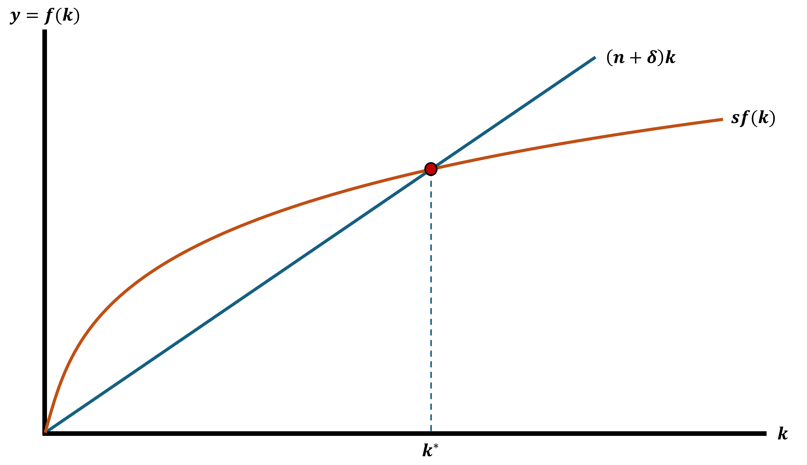

Theories of Growth & Development
EC 390 - Development Economics
2025
Goals
Look at economic theories/models to see what they can say about:
- What can be done to improve a country’s economic growth
- What changes to expect as a country develops
We will begin with growth models Factors that influence economic growth
Then cover contemporary models of development and underdevelopment (coordination failure)
Harrod-Domar Growth Model
Model 01 - Harrod-Domar
Savings drive growth
The more a country saves, the more it can invest in capital
To produce output, the only thing we need is capital
- We ignore labor
- Let’s start with the model assumptions
Harrod-Domar Assumptions
1. Net savings \((S)\) is a fixed proportion of national income \((Y)\)
2. A fixed amount of Capital \((K)\) is need to produce output
3. All new Investments \((I)\) is used to increase the Capital Stock \((K)\)
4. The savings-investment market clears
Harrod-Domar Assumptions
1. Net savings \((S)\) is a fixed proportion of national income \((Y)\)
\[\begin{align*} S = sY \\ 0 \leq s \leq 1 \end{align*}\]
2. A fixed amount of Capital \((K)\) is need to produce output
3. All new Investments \((I)\) is used to increase the Capital Stock \((K)\)
4. The savings-investment market clears
Harrod-Domar Assumptions
1. Net savings \((S)\) is a fixed proportion of national income \((Y)\)
2. A fixed amount of Capital \((K)\) is need to produce output
- Capital is a fixed proportion of output where \(c\) is a capital-output ratio
\[K = cY\] \[\Rightarrow c = \dfrac{K}{Y}\] \[\Rightarrow \Delta K = c \Delta Y\]
3. All new Investments \((I)\) is used to increase the Capital Stock \((K)\)
4. The savings-investment market clears
Harrod-Domar Assumptions
1. Net savings \((S)\) is a fixed proportion of national income \((Y)\)
2. A fixed amount of Capital \((K)\) is need to produce output
3. All new Investments \((I)\) is used to increase the Capital Stock \((K)\)
\[ I = \Delta K \]
4. The savings-investment market clears
Harrod-Domar Assumptions
1. Net savings \((S)\) is a fixed proportion of national income \((Y)\)
2. A fixed amount of Capital \((K)\) is need to produce output
3. All new Investments \((I)\) is used to increase the Capital Stock \((K)\)
4. The savings-investment market clears
- All savings are used as investment
\[ S = I \]
Harrod-Domar Growth Model
We are after the Growth Rate of Income (or production)
\[ \dfrac{\Delta Y}{Y} \]
- There are only 4 equations
- Algebra is easy once you know how and where you are going
Harrod-Domar Growth Model
Our 4 equations
1. \(S = sY\)
2. \(S = I\)
3. \(I = \Delta K\)
4. \(\Delta K = c \Delta Y\)

Show that \(\; sY = c \Delta Y\)
\(sY = S \Rightarrow\) \(sY = I \Rightarrow\) \(sY = \Delta K \Rightarrow\) \(sY = c \Delta Y\)
Harrod-Domar: Growth Rate of Output
Recall we want to find the Growth Rate of Income \(\dfrac{\Delta Y}{Y}\)
We can rearrange \(sY = c \Delta Y\) to get it
\[ \dfrac{\Delta Y}{Y} = \dfrac{s}{c} \]
This states that the Rate of Growth of GDP is determined by the net national savings ratio \((s)\) and the national capital-output ratio \((c)\), at the same time
- Positively related to the savings ratio
- Negatively related to the economy’s capital-output ratio
Harrod-Domar: Growth Rate of Output
\[ \dfrac{\Delta Y}{Y} = \dfrac{s}{c} \]
Let’s break it down a bit
\(\dfrac{1}{c}\) measures the efficiency of capital use
- The lower the value of \(c\) (the more efficient) that an economy runs at, the greater the output that can be gained from additional investment
- A higher \(c\) means less output of \(Y\)
- If \(c\) increases, then the growth rate decreases
Harrod-Domar: Growth Rate of Output
\[ \dfrac{\Delta Y}{Y} = \dfrac{s}{c} \]
\(s\) is the economy’s saving rate, which influences the level of investment
- A higher \(s\) implies a higher investment level
- If \(s\) increases, then the growth rate increases
Harrod-Domar Lessons
In other words, the Rate of Growth depends as much on the efficiency of capital investments as the amount of capital invested
In its simplest form, a country that wants to speed up development:
1. Save more
2. Build more efficient capital
Harrod-Domar Lessons
In other words, the Rate of Growth depends as much on the efficiency of capital investments as the amount of capital invested
In its simplest form, a country that wants to speed up development:
1. Save more
Difficult for individuals in developing countries Why?
Can be helped by Foreign Aid/Investment
2. Build more efficient capital
Harrod-Domar Lessons
In other words, the Rate of Growth depends as much on the efficiency of capital investments as the amount of capital invested
In its simplest form, a country that wants to speed up development:
1. Save more
2. Build more efficient capital
- Technology helps with making capital more efficient
Harrod-Domar Simple Example
- In 2011, Indonesia had a capital-output ratio of 4
\[ \dfrac{K}{Y} = c = 4 \]
If we want a growth rate of 6%, Harrod-Domar tells us that Indonesia needs a savings rate of?
\(\dfrac{\Delta Y}{Y} = \dfrac{s}{c}\) \(\Rightarrow 6 = \dfrac{s}{4}\) \(\Rightarrow 24 = s\)
Harrod-Domar Growth Model
With theoretical models, you should always ask yourself:
What? Why? Huh?
- Why this model?
- After World War II, much of Europe was destroyed
- There was a lack of capital \((K)\)
- The Marshall Plan was a large foreign aid package from the US to Western Europe
- The aid package greatly sped up recovery of Europe and boosted economic growth
- What does it do?
- Explains how savings, capital, and output are potentially linked together
- Huh? That’s not realistic
Criticisms of Harrod-Domar
No model is perfect
But good models help explain a small part of life
But these are not without proper criticism:
- Overly simplified
- No population growth
- No technology change
- The \(K = cY\) assumption is concerning
- Assumes that turning capital into output is easy
- Assumes constant returns to capital
- Policy enacted based on the model did not increase economic growth significantly
Solow Growth Model
Model 02 - Solow Growth Model
Now we can add some important features
- Population growth
- Technological change
- Emphasizes looking at outcomes in per worker terms
Solow Growth Model Assumptions
1. Output per worker \(y\) depends only on the amount of capital per worker \(k\)
2. Every worker saves a proportion \(s\) of their income
3. Population grows at rate \(n\)
4. Capital depreciates at rate \(\delta\)
5. Capital stock depends on new investment
Solow Growth Model Assumptions
1. Output per worker \(y\) depends only on the amount of capital per worker \(k\)
\[ y = f(k)\]
- \(f()\) is increasing (more capital leads to more output)
- \(f()\) is concave (decreasing returns to capital)
2. Every worker saves a proportion \(s\) of their income
3. Population grows at rate \(n\)
4. Capital depreciates at rate \(\delta\)
5. Capital stock depends on new investment
Solow Growth Model Assumptions
1. Output per worker \(y\) depends only on the amount of capital per worker \(k\)
2. Every worker saves a proportion \(s\) of their income
\[0 \leq s \leq 1\]
3. Population grows at rate \(n\)
4. Capital depreciates at rate \(\delta\)
5. Capital stock depends on new investment
Solow Growth Model Assumptions
1. Output per worker \(y\) depends only on the amount of capital per worker \(k\)
2. Every worker saves a proportion \(s\) of their income
3. Population grows at rate \(n\)
4. Capital depreciates at rate \(\delta\)
5. Capital stock depends on new investment
Solow Growth Model Assumptions
1. Output per worker \(y\) depends only on the amount of capital per worker \(k\)
2. Every worker saves a proportion \(s\) of their income
3. Population grows at rate \(n\)
4. Capital depreciates at rate \(\delta\)
5. Capital stock depends on new investment
- Every time period workers save some of their income \(sf(k)\)
- However, capital depreciates so we lose \(\delta k\)
- The populations grows at rate \(n\) so the capital per worker gets smaller by \(nk\)
Solow - Change in Capital per Worker
\(\Delta k\) \(=\) \(sf(k)\) \(-\) \(nk\) \(-\) \(\delta k\)
\(\Delta k\): Growth of capital per worker
\(sf(k)\): Savings
\(nk\): Net new workers
\(\delta k\): Capital depreciation
Solow - Change in Capital per Worker
\(\Delta k\) \(=\) \(sf(k)\) \(-\) \(nk\) \(-\) \(\delta k\)
\(\Delta k\): Growth of capital per worker
The more capital a worker has to work with, the more output that they can produce
The change in capital per worker depends on the other components
\(sf(k)\): Savings
\(nk\): Net new workers
\(\delta k\): Capital depreciation
Solow - Change in Capital per Worker
\(\Delta k\) \(=\) \(sf(k)\) \(-\) \(nk\) \(-\) \(\delta k\)
- \(\Delta k\): Growth of capital per worker
\(sf(k)\): Savings (Positive)
- Each worker saves a proportion of their income and is reinvested into “capital in the future”
\(nk\): Net new workers
\(\delta k\): Capital depreciation
Solow - Change in Capital per Worker
\(\Delta k\) \(=\) \(sf(k)\) \(-\) \(nk\) \(-\) \(\delta k\)
\(\Delta k\): Growth of capital per worker
\(sf(k)\): Savings
\(nk\): Net new workers (Negative)
Population (workers) grow at a rate \(n \geq 0\) (usually very small)
As there are more people, there is less capital per worker determined by \(nk\)
- \(\delta k\): Capital depreciation
Solow - Change in Capital per Worker
\(\Delta k\) \(=\) \(sf(k)\) \(-\) \(nk\) \(-\) \(\delta k\)
\(\Delta k\): Growth of capital per worker
\(sf(k)\): Savings
\(nk\): Net new workers
\(\delta k\): Capital depreciation (Negative)
- Capital requires service (repairs) We lose \(\delta k\) every period
- \(0 < \delta < 1\)
Solow Growth Model - Steady State
The Solow Model allows us to consider a steady state level of capital
- Steady State: When the economy has fully adjusted and there is no change in some variable
- The economy is in an equilibrium that is stable
- Output and capital per worker are no longer changing
We want \(k\) to be in steady state
This means that \(\Delta k = 0\) Because \(k\) is no longer changing
We call this level of capital \(k^{*}\)
Solow Growth Model - Steady State
When the economy is in steady state \(k^{*}\) we have:
\[ \Delta k = 0 = sf(k^{*}) - (n + \delta)k^{*} \\ sf(k^{*}) = (n + \delta)k^{*} \]
More than the math, I want you to understand this intuitively
- Graphs are great to be able to talk about this
Steady State
Out of Steady State

Out of Steady State

Increase in Savings Rate

Solow Growth Model Dynamics
Be aware of all the possible moving pieces in this model
It allows us to explore the effects of changes in:
- \(s\): Savings Rates
- \(\delta\): Depreciation Rate
- \(n\): Population Growth Rate
Solow Growth Model
What? Why? Huh?
Why this model?
- It is a simple and intuitive way of understanding how savings, population growth, and technology change impacts long-run economic growth
- What does it do? Decomposes growth into two key forces
1. Capital accumulation through savings and investment
2. Population growth as the labor force expands
- Huh? Again with this fantasy stuff?
Criticisms of Solow
There is a constant savings rate that is exogenously given
Ignores human capital
Predicts too much convergence
- Economies with the same rates \((s,n,\delta)\) should reach the same output per person
No role for institutions or policy
Treats labor as homogeneous where all workers are the same
EC390, Lecture 02 | Theories